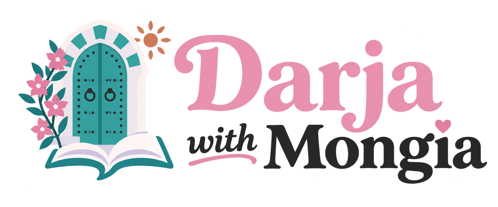
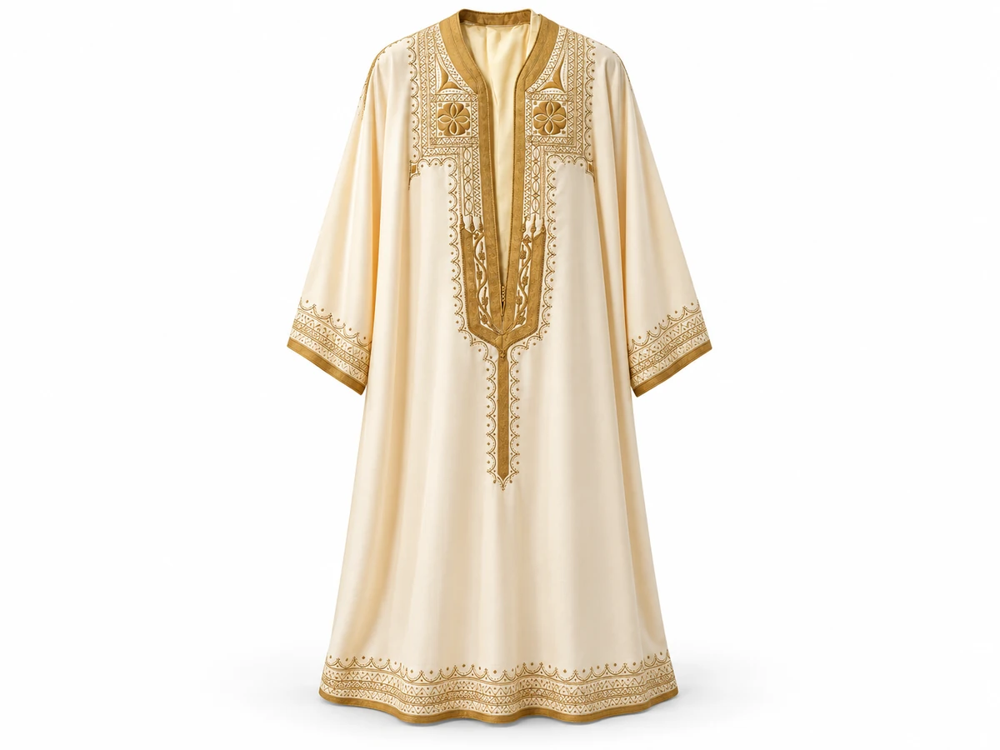
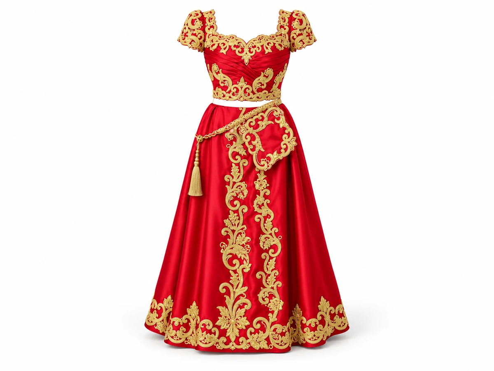
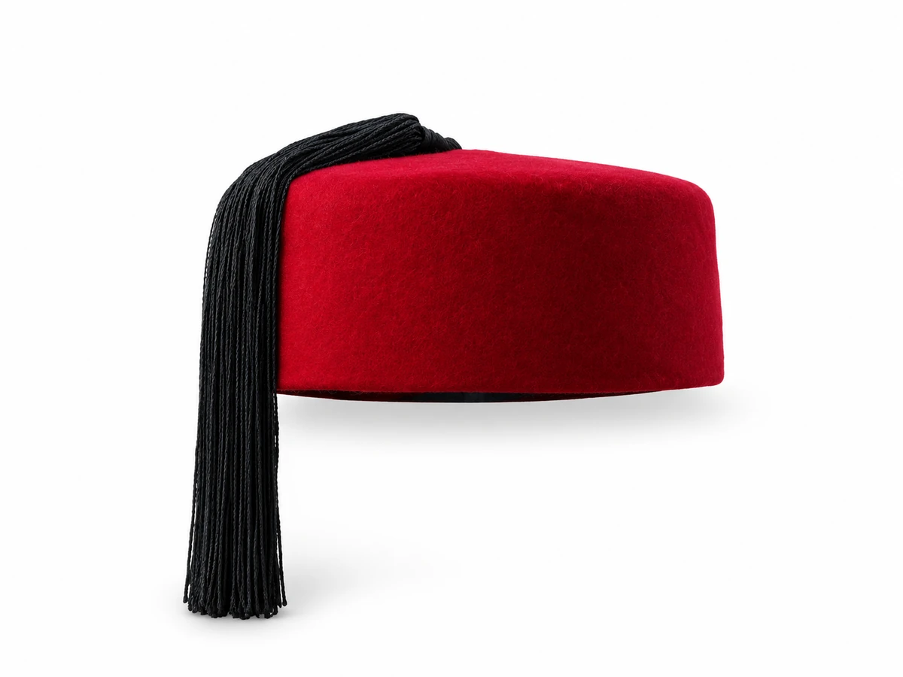
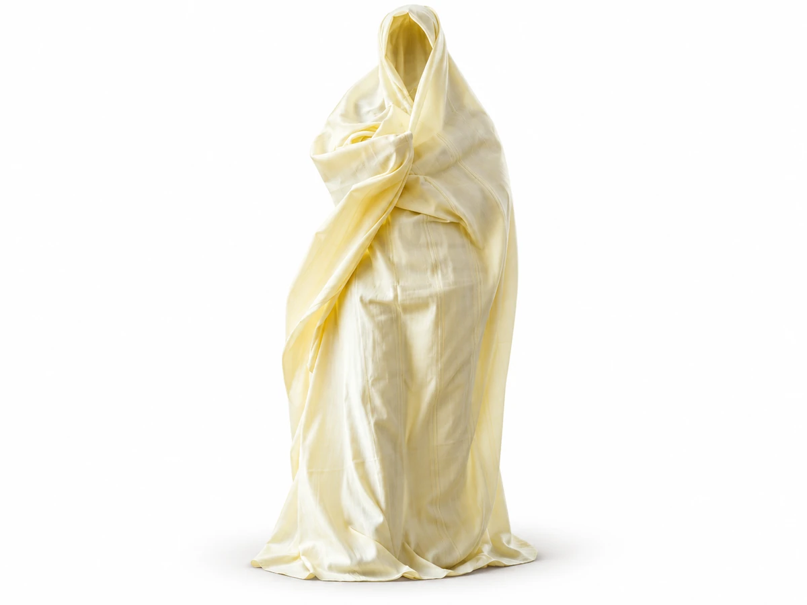
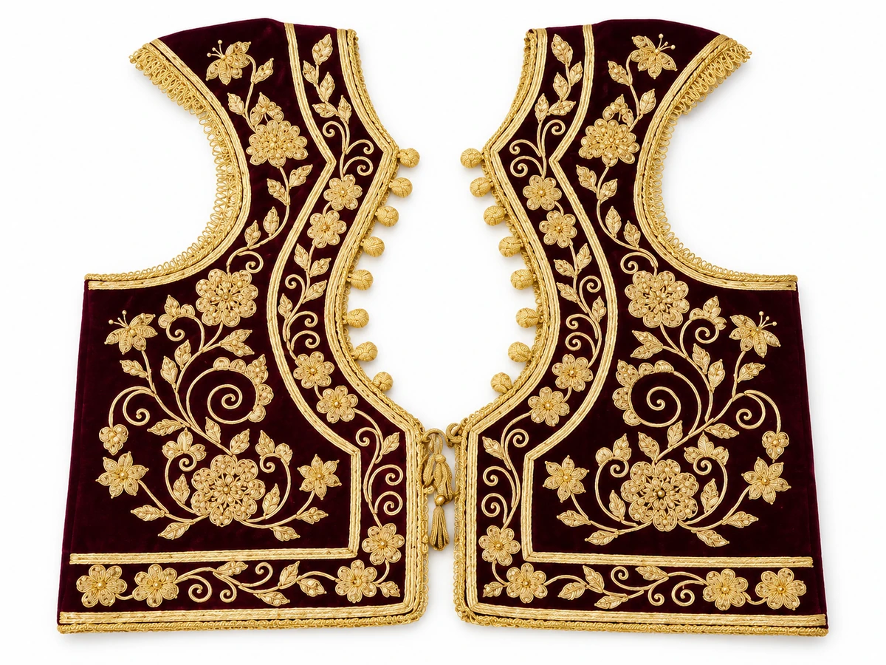
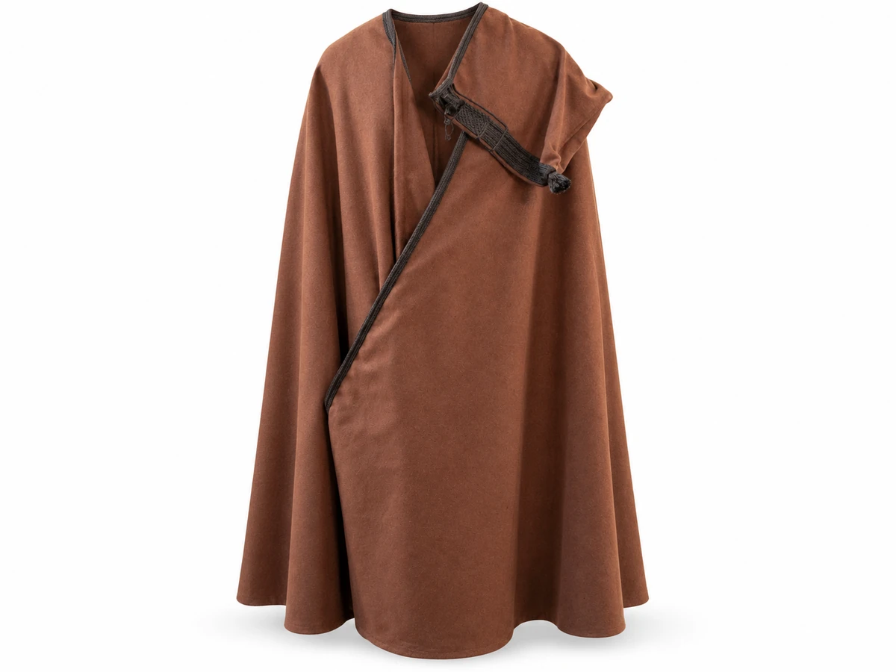

الجُبّة
ej-jebba
Traditional tunic
A loose traditional tunic, shown here in its men’s version. Often worn for celebrations.
Look for the decorated neckline.

اللباس التقليدي التونسي
el-lbes et-taqlidi et-tounsi
Discover a little Tunisian culture, learn six clothing names, and practise a few words you can use at a celebration.
Look, listen, repeat — then try it yourself.
A little Tunisian wardrobe
Culture & language


الشاشية
ech-chechia
A familiar little red cap.
Six words. A small window into Tunisian life.
Traditional clothing is part of Tunisian cultural heritage. Styles and embroidery vary from region to region. Many traditional outfits are worn for weddings and celebrations, while some garments also have everyday uses. Here are six examples to help you recognise them — and say their names in Darja.
Look at each garment. Read its name, listen, and repeat it aloud.
ej-jebba
Traditional tunic
A loose traditional tunic, shown here in its men’s version. Often worn for celebrations.
Look for the decorated neckline.
et-tabdila
Traditional festive outfit
A decorated women’s outfit associated with weddings. A familiar version combines a fouta and blouza.
Notice the matching pieces and embroidery.

es-sefsari
Traditional wrap
A large white or cream wrap, traditionally draped over a woman’s head and clothing when going out.
Notice how the fabric is draped.
ech-chechia
Traditional felt cap
A soft, round felt cap made from wool. The classic Tunisian chechia is red.
Look for the soft, rounded shape.

el-farmla
Traditional waistcoat
A sleeveless waistcoat, often embroidered and worn as part of a traditional outfit.
Versions appear in men’s and women’s dress.

el-barnous
Hooded wool cloak
A hooded wool cloak worn over clothing. It provides warmth, especially in colder weather.
Look for the hood and flowing fabric.
Pronunciation tip: in ej-jebba, et-tabdila, es-sefsari and ech-chechia, the article joins the first sound. Latin spelling helps; the recording is your pronunciation guide.
Name an item or give a simple compliment at a celebration.
Hedhi chechia.
This is a chechia.
Hedha barnous.
This is a barnous.
Ma7leha el-lebsa!
What a beautiful outfit!
Your turn: point to the chechia or barnous above and say its sentence. In the compliment, 7 represents the Arabic sound ح.
Choose the right answer. There is no timer, and you can try again if you need to.
Cover the English meanings and see which words you remember.
| Arabic | Latin spelling | English |
|---|---|---|
| الجُبّة | ej-jebba | Traditional tunic |
| التبديلة | et-tabdila | Traditional festive outfit |
| السفساري | es-sefsari | Traditional wrap |
| الشاشية | ech-chechia | Traditional felt cap |
| الفرملة | el-farmla | Traditional waistcoat |
| البرنوس | el-barnous | Hooded wool cloak |
You have explored six garments and three useful expressions. Check what you can do:
Explore more free lessons